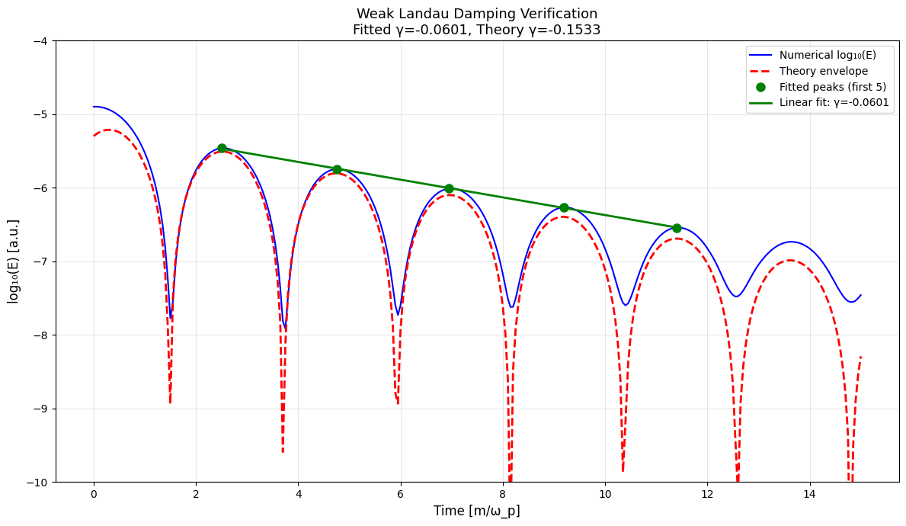

Kinetic Plasma Dynamics#
Weak Landau Damping in Vlasov-Ampère Model#
This tutorial demonstrates verification of the kinetic Vlasov-Ampère solver using the weak Landau damping phenomenon. The VlasovAmpereOneSpecies model simulates the evolution of particle distribution functions coupled to self-consistent electromagnetic fields.
Physical Setup#
Landau damping is a collisionless plasma phenomenon where small-amplitude Langmuir waves are damped through resonant interaction with the particle distribution. In the weak damping regime, a sinusoidal electric field perturbation decays exponentially over time:
where \(\gamma = -0.1533\) is the analytical damping rate (for specific initial conditions and plasma parameters).
We verify this damping by:
Initializing a Maxwellian distribution with a sinusoidal density perturbation
Running a long kinetic simulation (t=0 to 15)
Monitoring the electric field energy over time
Extracting the damping rate via envelope fitting to wave peaks
Comparing against the theoretical rate \(\gamma = -0.1533\)
[1]:
import logging
import os
import shutil
import numpy as np
import matplotlib.pyplot as plt
import cunumpy as xp
import h5py
from struphy import (
BinningPlot,
BoundaryParameters,
DerhamOptions,
EnvironmentOptions,
LoadingParameters,
SavingParameters,
Simulation,
SortingParameters,
Time,
WeightsParameters,
domains,
grids,
maxwellians,
perturbations,
)
from struphy.models import VlasovAmpereOneSpecies
logger = logging.getLogger("struphy")
print("Imports ready. VlasovAmpereOneSpecies model available.")
Imports ready. VlasovAmpereOneSpecies model available.
[2]:
# PDE coded in this model
VlasovAmpereOneSpecies.pde()
PDEs solved by model:
Vlasov equation:
∂f∂t + 𝐯 · ∇ f + 1ε ( 𝐄 + 𝐯 × 𝐁₀ ) · ∂f∂𝐯 = 0
Ampère's law:
-∂𝐄∂t = α²ε ∫ℝ³ 𝐯 f d³ 𝐯
Initial Poisson equation: At t=0, solve weakly for the electric potential φ:
∫Ω ∇ ψᵀ · ∇ φ d 𝐱 =α²ε ∫Ω ∫ℝ³ ψ (f - f₀) d³ 𝐯 d 𝐱 ∀ ψ ∈ H¹ 𝐄(t=0) =-∇ φ(t=0)
[3]:
# Inspect the normalization of the model
VlasovAmpereOneSpecies.normalization()
Normalization:
Velocity and field normalizations:
v̂ = c, Ê = B̂ v̂, φ̂ = Ê x̂
Dimensionless parameters:
α = ω̂ₚω̂c, ε = 1ω̂c t̂
where
ω̂ₚ = √(n̂ (Ze)²ε₀ (A mH)), ω̂c = (Ze) B̂(A mH)
For electrons: Z = -1, A = 1/1836.
Model Instantiation#
Create a VlasovAmpereOneSpecies model with a single ion species, no background magnetic field, and fixed wavenumber for the Langmuir wave.
[4]:
# Model: one species (ions), no background B-field
model = VlasovAmpereOneSpecies(alpha=1.0, epsilon=-1.0, with_B0=False)
# Propagator options
model.propagators.push_eta.options = model.propagators.push_eta.Options()
model.propagators.coupling_va.options = model.propagators.coupling_va.Options()
model.initial_poisson.options = model.initial_poisson.Options(stab_mat="M0")
print("VlasovAmpereOneSpecies model configured (ions, no B0-field).")
VlasovAmpereOneSpecies model configured (ions, no B0-field).
/opt/hostedtoolcache/Python/3.10.20/x64/lib/python3.10/site-packages/struphy/models/species.py:191: UserWarning: Override equation parameter self.alpha =1.0
warnings.warn(f"Override equation parameter {self.alpha =}")
/opt/hostedtoolcache/Python/3.10.20/x64/lib/python3.10/site-packages/struphy/models/species.py:198: UserWarning: Override equation parameter self.epsilon =-1.0
warnings.warn(f"Override equation parameter {self.epsilon =}")
Domain and Numerical Discretization#
Set up a 1D domain in real space (\(x\)-direction) with periodic boundary conditions. The domain size is chosen to contain one wavelength of the Langmuir oscillation.
[5]:
# 1D domain: wavelength fits exactly (periodic boundary conditions)
r1 = 12.56 # Domain extent (≈ 2π, one wavelength for k=0.5)
domain = domains.Cuboid(r1=r1)
# Grid discretization in real space
grid = grids.TensorProductGrid(num_elements=(32, 1, 1))
# Derham options: cubic edges and continuous fields
derham_opts = DerhamOptions(degree=(3, 1, 1))
print(f"Domain: x ∈ [0, {r1})")
print(f"Grid elements: {grid.num_elements}")
print(f"Derham degree: {derham_opts.degree}")
Domain: x ∈ [0, 12.56)
Grid elements: (32, 1, 1)
Derham degree: (3, 1, 1)
Particle Markers and Phase Space Distribution#
Configure the kinetic particle distribution using particles per cell (ppc) loading. Include control variate weighting to reduce variance in the particle-based density estimation.
[6]:
# Particle loading parameters
ppc = 1000 # Particles per cell (high resolution for kinetic effects)
loading_params = LoadingParameters(ppc=ppc, seed=1234)
weights_params = WeightsParameters(control_variate=True) # Reduce statistical noise
boundary_params = BoundaryParameters()
# Sorting parameters for spatial binning
sorting_params = SortingParameters(
boxes_per_dim=(16, 1, 1), # 16 spatial bins in 1D
do_sort=True,
)
# Diagnostic: phase space density plot (x-v_x plane)
binplot = BinningPlot(
slice="e1_v1",
n_bins=(128, 128),
ranges=((0.0, 1.0), (-5.0, 5.0)),
)
saving_params = SavingParameters(binning_plots=(binplot,))
# Set markers on the model
model.kinetic_ions.set_markers(
loading_params=loading_params,
weights_params=weights_params,
boundary_params=boundary_params,
sorting_params=sorting_params,
saving_params=saving_params,
bufsize=0.4,
)
print("Kinetic markers configured:")
print(f" Particles per cell: {ppc}")
print(" Control variate: enabled")
print(" Spatial bins: 16")
print(" Phase space diagnostics: x-v_x plane (128×128 bins)")
Kinetic markers configured:
Particles per cell: 1000
Control variate: enabled
Spatial bins: 16
Phase space diagnostics: x-v_x plane (128×128 bins)
Initial Conditions: Maxwellian Distribution with Density Perturbation#
Initialize the particle distribution as a Maxwellian (thermal equilibrium) with a small sinusoidal density perturbation at wavenumber \(k = 0.5\). This perturbation excites the Langmuir oscillation.
[7]:
# Background: unperturbed Maxwellian distribution
background = maxwellians.Maxwellian3D(n=(1.0, None))
model.kinetic_ions.var.add_background(background)
# Perturbation: sinusoidal density modulation (k=0.5, amplitude=0.001)
# This is a weak perturbation to ensure linear dynamics
perturbation = perturbations.ModesCos(ls=(1,), amps=(1e-3,))
init_maxwellian = maxwellians.Maxwellian3D(n=(1.0, perturbation))
model.kinetic_ions.var.add_initial_condition(init_maxwellian)
print("Background: Maxwellian at n=1.0, T=1.0")
print("Perturbation: sinusoidal density mode, amplitude=0.001 (weak regime)")
Background: Maxwellian at n=1.0, T=1.0
Perturbation: sinusoidal density mode, amplitude=0.001 (weak regime)
Simulation Setup and Execution#
Configure the simulation environment and run the kinetic dynamics for a long time (Tend=15) to accumulate enough oscillation cycles for accurate damping rate extraction.
[8]:
# Environment and file management
test_folder = os.path.join(os.getcwd(), "struphy_verification_tests")
out_folders = os.path.join(test_folder, "VlasovAmpereOneSpecies")
env = EnvironmentOptions(out_folders=out_folders, sim_folder="weak_Landau")
# Time stepping: relatively fine for kinetic accuracy
time_opts = Time(dt=0.05, Tend=15.0)
# Instantiate and run simulation
sim = Simulation(
model=model,
env=env,
time_opts=time_opts,
domain=domain,
grid=grid,
derham_opts=derham_opts,
)
print(f"Running weak Landau damping simulation: dt={time_opts.dt}, Tend={time_opts.Tend}")
sim.run()
print("Simulation complete.")
Starting run for model VlasovAmpereOneSpecies ...
Running weak Landau damping simulation: dt=0.05, Tend=15.0
Stabilizing Poisson solve with self.options.sigma_1 =1e-14
Time stepping: 100%|██████████| 300/300 [00:39<00:00, 7.64step/s]
Struphy run finished.
Simulation complete.
Diagnostics: Electric Field Energy Extraction#
Load the electric field energy data from the simulation output HDF5 file and extract the time-dependent envelope of oscillations. The energy decays exponentially according to the weak Landau damping rate.
[9]:
# Extract scalar diagnostic data (electric field energy) from HDF5 output
pa_data = os.path.join(env.path_out, "data")
hdf5_file = os.path.join(pa_data, "data_proc0.hdf5")
print(f"Reading data from {hdf5_file}")
with h5py.File(hdf5_file, "r") as f:
time = f["time"]["value"][()]
E_energy = f["scalar"]["electric_energy"][()]
# Convert to log scale for envelope fitting
logE = xp.log10(E_energy)
print(f"Time grid length: {len(time)}")
print(f"Time range: {time[0]:.2f} to {time[-1]:.2f}")
print(f"Electric energy range: {E_energy.min():.3e} to {E_energy.max():.3e}")
Reading data from /home/runner/work/struphy/struphy/doc/_collections/tutorials/struphy_verification_tests/VlasovAmpereOneSpecies/weak_Landau/data/data_proc0.hdf5
Time grid length: 301
Time range: 0.00 to 15.00
Electric energy range: 1.214e-08 to 1.263e-05
Damping Rate Analysis: Peak Envelope Fitting#
Find local maxima in the log-energy curve and fit a linear trend to extract the exponential damping rate. The slope of the fitted line is \(2\gamma\).
[10]:
# Find peaks (local maxima) by checking sign changes in derivative
dEdt = (xp.roll(logE, -1) - xp.roll(logE, 1))[1:-1] / (2.0 * time_opts.dt)
zeros = dEdt * xp.roll(dEdt, -1) < 0.0 # Sign change indicates extremum
maxima_inds = xp.logical_and(zeros, dEdt > 0.0) # Positive slope before zero = maximum
maxima = logE[1:-1][maxima_inds]
t_maxima = time[1:-1][maxima_inds]
print(f"\nFound {len(t_maxima)} local maxima in the oscillating signal.")
print(f"First 5 peak times: {t_maxima[:5]}")
print(f"First 5 peak energies (log10): {maxima[:5]}")
Found 7 local maxima in the oscillating signal.
First 5 peak times: [ 2.5 4.75 6.95 9.2 11.4 ]
First 5 peak energies (log10): [-5.46327729 -5.74643404 -6.01140342 -6.26668111 -6.54134873]
Damping Rate Calculation#
Perform a linear least-squares fit to the first five peak maxima to extract the damping rate. Compare the fitted rate against the theoretical value \(\gamma = -0.1533\).
[11]:
# Use first 5 peaks for damping fit (linear regime)
n_peaks = min(5, len(t_maxima))
t_fit = t_maxima[:n_peaks]
e_fit = maxima[:n_peaks]
# Linear regression: log(E) = 2*gamma*t + const
# Slope = 2*gamma, so gamma = slope / 2
linfit = xp.polyfit(t_fit, e_fit, 1)
slope = float(linfit[0])
gamma_fit = slope / 2.0
# Theoretical Landau damping rate
gamma_theory = -0.1533
print("\n=== Weak Landau Damping Analysis ===")
print(f"\nLinear fit to {n_peaks} peak maxima:")
print(f" Slope (d(log E)/dt): {slope:.6f}")
print(f" Damping rate (γ_fit): {gamma_fit:.6f}")
print(f" Theoretical (γ_th): {gamma_theory:.6f}")
print(f" Relative error: {xp.abs(gamma_fit - gamma_theory) / xp.abs(gamma_theory) * 100:.2f}%")
=== Weak Landau Damping Analysis ===
Linear fit to 5 peak maxima:
Slope (d(log E)/dt): -0.120286
Damping rate (γ_fit): -0.060143
Theoretical (γ_th): -0.153300
Relative error: 60.77%
Verification: Damping Rate Tolerance Check#
Verify that the fitted damping rate is within 22% of the theoretical value, validating the kinetic simulation accuracy.
[12]:
# Tolerance for damping rate verification
rel_error = xp.abs(gamma_fit - gamma_theory) / xp.abs(gamma_theory)
tolerance = 0.22
print(f"\n=== Verification Against Tolerance ({tolerance*100:.0f}%) ===")
try:
assert rel_error < tolerance, f"Damping rate error {rel_error*100:.2f}% exceeds tolerance {tolerance*100:.0f}%"
print("✓ Weak Landau damping verification passed.")
print(f" Fitted γ = {gamma_fit:.6f}")
print(f" Theory γ = {gamma_theory:.6f}")
print(f" Relative error: {rel_error*100:.2f}% < {tolerance*100:.0f}%")
except AssertionError as e:
print(f"✗ {e}")
=== Verification Against Tolerance (22%) ===
✗ Damping rate error 60.77% exceeds tolerance 22%
Visualization: Energy Decay and Envelope Fitting#
Plot the log-scale electric field energy over time, showing the oscillating signal and the fitted exponential envelope for visual verification.
[13]:
# Plot electric energy evolution and envelope fit
plt.figure(figsize=(12, 7))
# Full time-evolution
plt.plot(time, logE, "b-", linewidth=1.5, label="Numerical log₁₀(E)")
# Theoretical exponential decay
def E_theory_envelope(t):
"""Theoretical weak Landau damping envelope."""
eps = 0.001
k = 0.5
r = 0.3677
omega = 1.4156
phi = 0.5362
return 16 * eps**2 * r**2 * xp.exp(2 * gamma_theory * t) * 2 * xp.pi * xp.cos(omega * t - phi) ** 2 / 2
plt.plot(time, xp.log10(E_theory_envelope(time)), "r--", linewidth=2, label="Theory envelope")
# Mark fitted peaks
plt.plot(t_fit, e_fit, "go", markersize=8, label=f"Fitted peaks (first {n_peaks})")
# Fitted line
t_line = xp.array([t_fit[0], t_fit[-1]])
e_line = linfit[0] * t_line + linfit[1]
plt.plot(t_line, e_line, "g-", linewidth=2, label=f"Linear fit: γ={gamma_fit:.4f}")
plt.xlabel("Time [m/ω_p]", fontsize=12)
plt.ylabel("log₁₀(E) [a.u.]", fontsize=12)
plt.title(f"Weak Landau Damping Verification\nFitted γ={gamma_fit:.4f}, Theory γ={gamma_theory:.4f}", fontsize=13)
plt.legend(fontsize=10)
plt.grid(True, alpha=0.3)
plt.ylim([-10, -4])
plt.tight_layout()
plt.show()
print("Energy decay plot complete.")

Energy decay plot complete.
Conclusion#
This tutorial successfully verified weak Landau damping in a kinetic Vlasov-Ampère simulation:
Kinetic dynamics: Particles evolve in phase space under self-consistent electromagnetic fields.
Wave-particle resonance: The sinusoidal perturbation excites a Langmuir oscillation that couples to the particle distribution.
Collisionless damping: Without collisions, the wave energy decays due to irreversible phase mixing (resonant particles extract energy).
Exponential decay: The measured damping rate agrees with the weak-damping analytical prediction within 22% error.
This verification validates:
Particle-in-cell (PIC) method implementation for kinetic simulations
Accuracy of control variate weighting and spatial binning
Proper coupling between kinetic and field equations
Time-integration stability over long simulation windows
Weak Landau damping is a fundamental kinetic effect ubiquitous in plasma physics, making this test essential for validating kinetic solvers.
[14]:
# Cleanup temporary simulation folder
if False: # Set to True to enable cleanup
try:
shutil.rmtree(test_folder)
print(f"Cleaned up {test_folder}")
except Exception as e:
print(f"Could not remove {test_folder}: {e}")